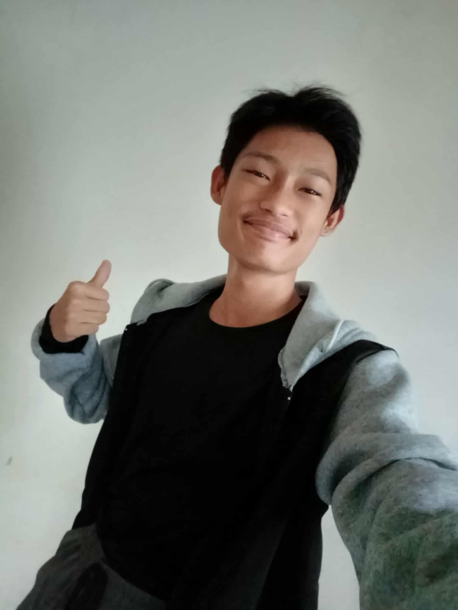
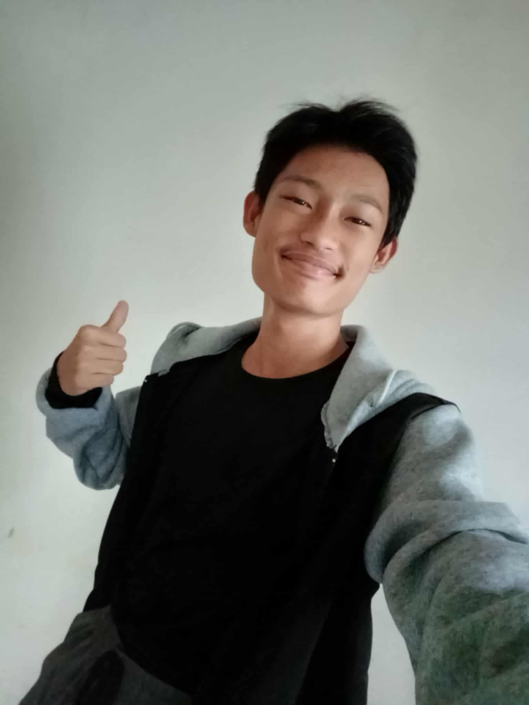
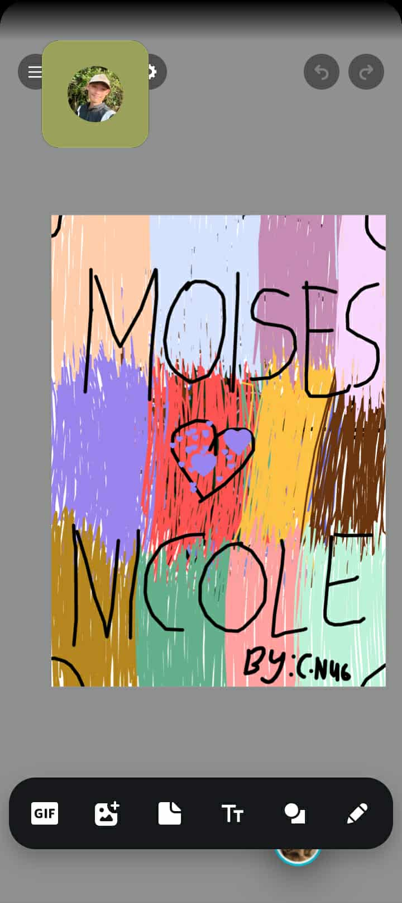
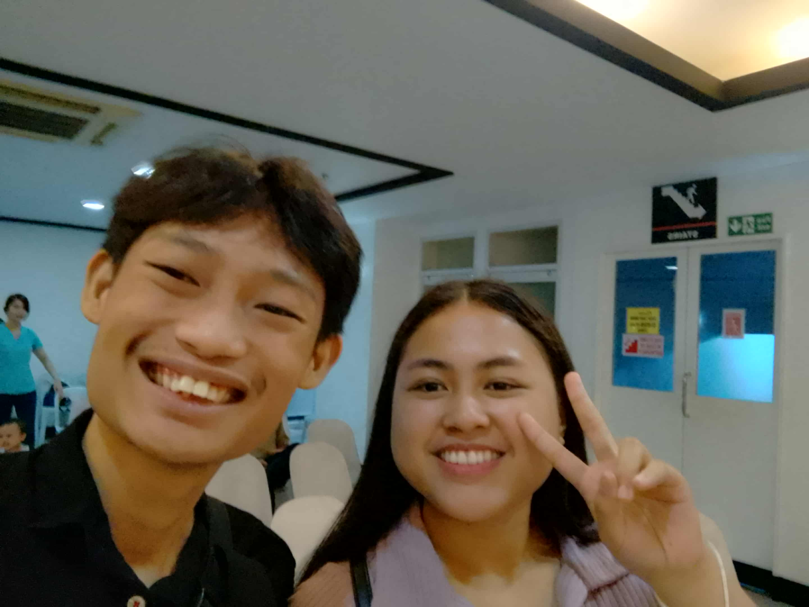
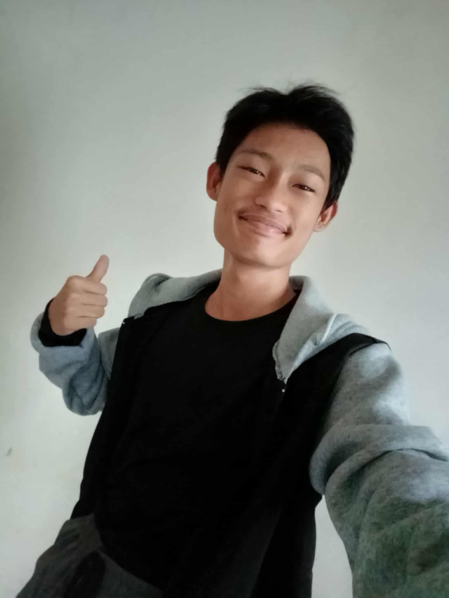
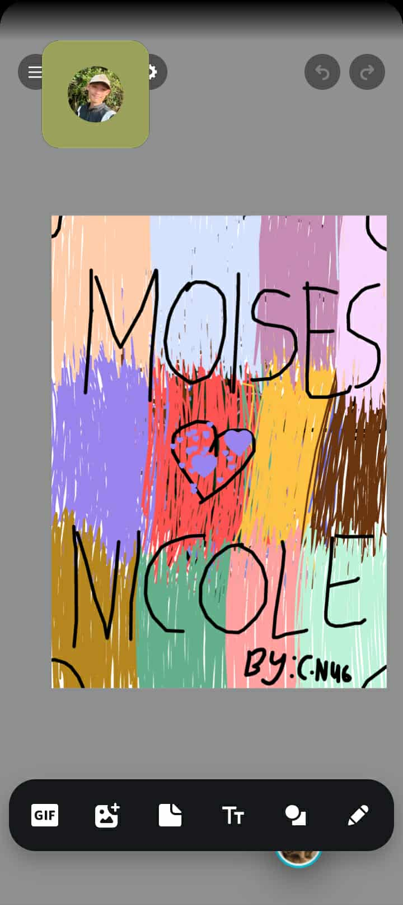
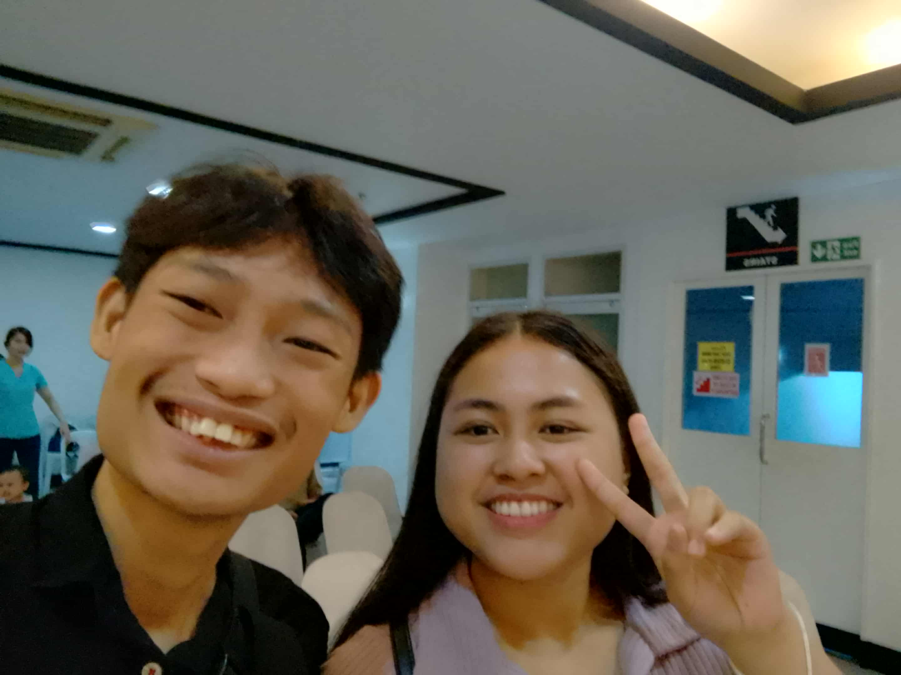

About Me
 

Name
Moises Danielle Ypil Tulinao
Home Address
Purok Castro, Brgy. Dakit, Bogo City, Cebu
Status
Courting Phase
 moisesandher@gmail.com
Mobile Number
0915 937 7749
Information About Me
Hello, I am Moises Danielle Tulinao, a BSIT student at the University of Cebu. Welcome to my personal webpage where I share my journey, background, and the reasons behind my choices. My story is one of growth, transformation, and discovery. From a childhood inspired by the sea to a future driven by technology, this site highlights the major milestones that have shaped my life.
Initially, I dreamed of following in my father’s footsteps, who was a marine engineer. Growing up near the sea, I was captivated by the idea of exploring the vast oceans. My academic path reflected that vision as I enrolled in the STEM strand during senior high school, hoping to chart a course towards becoming a marine engineer.
However, after high school graduation, my parents, who always had my best interests at heart, encouraged me to reconsider my career choice. They explained the challenges and uncertainties of the marine industry and urged me to find a more stable and financially rewarding profession. Although it was a tough decision, I pivoted and explored other fields.
It was during this period of reflection that I discovered Information Technology (IT). Initially, IT wasn’t on my radar, but after learning about the rapid growth of the digital world and the high demand for IT professionals, I realized this could be the perfect fit. IT is not just a career; it’s a way to solve real-world problems, innovate, and continuously learn. I’m now pursuing a Bachelor of Science in Information Technology (BSIT) at the University of Cebu, with aspirations of becoming a software developer and building technology solutions that can make a difference.

Moises Danielle Ypil Tulinao
Purok Castro, Brgy. Dakit, Bogo City, Cebu
Courting Phase
 moisesandher@gmail.com
0915 937 7749